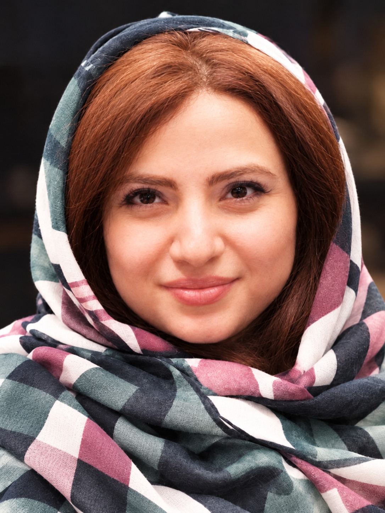

امروز کسبوکار من● بهروز
فروش امروز۱۲٬۴۰۰٬۰۰۰
سفارشها۲۸
✦ امروز کدام کالا بیشتر فروخته شد؟
کسبهوش
↗دستیار هوشمند مدیریت کسبوکارهای کوچک؛ با تمرکز اولیه بر سادهترکردن ثبت عملیات روزمره، موجودی، فروش و گزارشهای مدیریتی.
سلام، من مهسا نشاط هستم.
مهندس برق، فعال در طراحی وبسایت و ساخت وباپلیکیشن با کمک هوش مصنوعی. بعد از یک دهه مدیریت تولید و پخش پوشاک، امروز تجربهام از دنیای واقعی کسبوکار را به ایدهها و محصولات کاربردی تبدیل میکنم.

مسیر حرفهای من از مدیریت صفر تا صد تولید و پخش پوشاک شروع شد؛ جایی که هر روز با تصمیمگیری، مدیریت تیم، موجودی، فروش و چالشهای واقعی کسبوکار سروکار داشتم.
حالا به طراحی محصولات دیجیتال علاقهمندم و بهعنوان یک وایبکدر (توسعهدهنده با کمک هوش مصنوعی) در حال یادگیری و ساخت وبسایتها و وباپلیکیشنهایی هستم که به نیازهای واقعی پاسخ میدهند. «کسبهوش» نقطه اتصال این دو تجربه است.
مجموعهای از پروژههای شخصی و نمونههای در حال طراحی و توسعه. وضعیت هر پروژه مشخص شده است تا مسیر واقعی پیشرفت آن روشن باشد.
دستیار هوشمند مدیریت کسبوکارهای کوچک؛ با تمرکز اولیه بر سادهترکردن ثبت عملیات روزمره، موجودی، فروش و گزارشهای مدیریتی.
مفهوم یک تجربه خرید پوشاک زنانه با هویت بصری مینیمال و چشمانداز قابلیتهای پیشنهاد استایل و پرو مجازی در مراحل آینده.
طراحی و بهبود صفحه اصلی فروشگاه اینترنتی پوشاک زنانه فارسی، با تمرکز بر دستهبندیهای درست، نمایش محصول و تجربه خرید ساده.
طرح یک محیط آموزشی با بخشهای مجزای دانشآموز، مشاور، والدین و مدیر برای پیگیری برنامه مطالعه و گزارش پیشرفت.
طراحی اولیه سایت فارسی برای جستوجو و رزرو خدمات سفر زیارتی از تهران، با انتخاب مقصد، خدمات سفر و تاریخ شمسی.
ایده و طراحی اولیه یک فضای فارسی برای انتشار و شنیدن پادکستها، با محتوای رایگان و اشتراکی.
تصاویر بالا برای نمایش حالوهوای پروژهها طراحی شدهاند و تصویر واقعی محصول نهایی یا ادعای تکمیل قابلیتها نیستند.
ساخت صفحات مدرن، فارسی، سازگار با موبایل و متناسب با نیاز برند و مخاطب.
WEB DESIGN — طراحی وبطراحی و توسعه تدریجی ابزارها و محیطهای مدیریتی کاربردی، از ایده تا نمونه اولیه.
WEB APPLICATION — نرمافزار تحت وباستفاده از ابزارهای هوش مصنوعی در فرایند ایدهپردازی، طراحی، ساخت و بهبود محصول.
VIBE CODING — کدنویسی به کمک هوش مصنوعیتجربه عملی تصمیمگیری، فروش، موجودی، تولید و هماهنگی تیمها در صنعت پوشاک.
BUSINESS OPERATIONS — عملیات کسبوکارمسیر من خطی نبوده؛ اما هر مرحله از آن، چیزی به شیوه فکرکردن و ساختن من اضافه کرده است.
تحصیل در فرزانگان تهران و سپس رشته مهندسی برق در دانشگاه پلیتکنیک تهران.
فعالیت در فرایندهای واقعی تأمین، تولید، انبار، فروش و مدیریت روزمره کسبوکار.
یادگیری مستمر، طراحی سایت و وباپلیکیشن با کمک هوش مصنوعی و پیشبرد پروژه کسبهوش.
برای همکاری در طراحی وبسایت، بررسی ایده یک محصول یا آشنایی بیشتر با پروژهها میتوانی برایم ایمیل بفرستی.